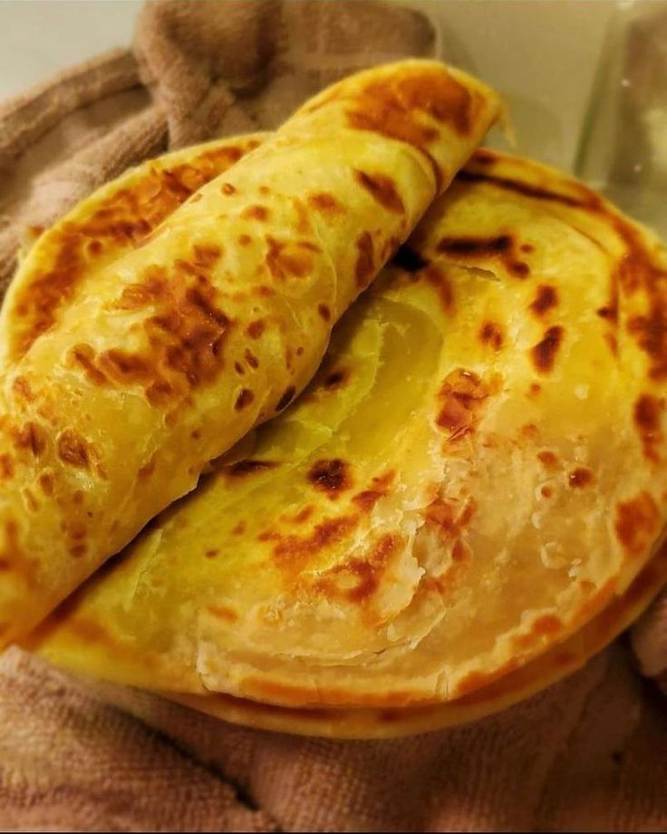

Chapati
Home

Chapati is a beloved dish in East Africa, especially in Kenya, where it is enjoyed during family meals and special occasions.
Made from wheat flour, water, and oil, chapati is known for its soft, layered texture and delicious taste.
It is commonly served with stews, curries, or even eaten on its own with tea. The preparation involves kneading the dough,
rolling it into thin circles, and cooking it on a hot skillet until perfectly golden. Chapati holds a special place in Kenyan cuisine,
symbolizing warmth and togetherness.
Ingredients
- 2 cups of all-purpose flour
- 1 teaspoon of salt
- 1 tablespoon of vegetable oil
- 3/4 cup of warm water (adjust as needed)
- Extra flour for dusting
Steps for Preparation
- In a large bowl, mix the flour and salt together.
- Add the vegetable oil and mix until crumbly.
- Gradually add warm water, kneading until a soft dough forms.
- Cover the dough with a damp cloth and let it rest for 30 minutes.
- Divide the dough into small balls (about the size of a golf ball).
- On a floured surface, roll each ball into a thin circle.
- Heat a skillet over medium heat and cook each chapati for about 1-2 minutes on each side, or until golden brown.
- Brush with butter or oil if desired, and keep warm until serving.
- Serve chapati warm with your favorite stew or curry.